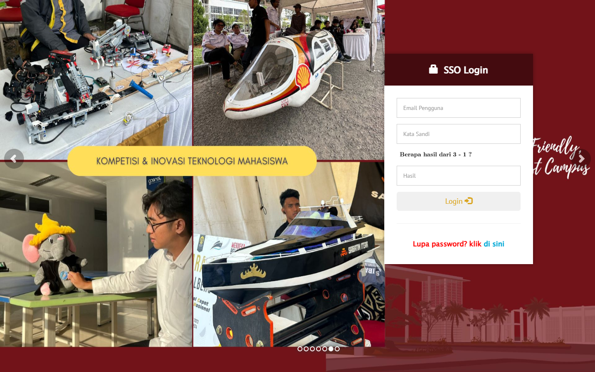
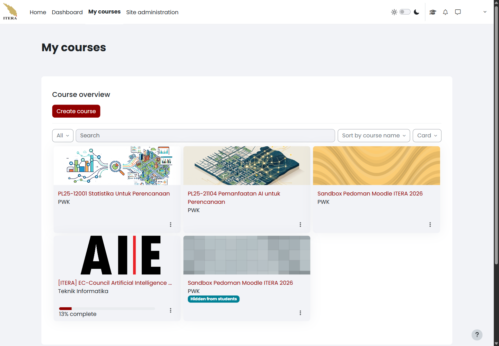
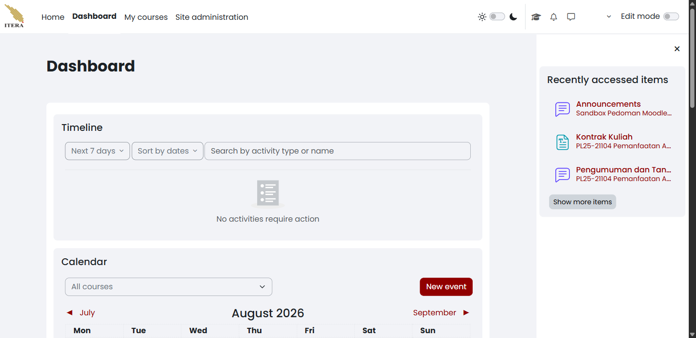
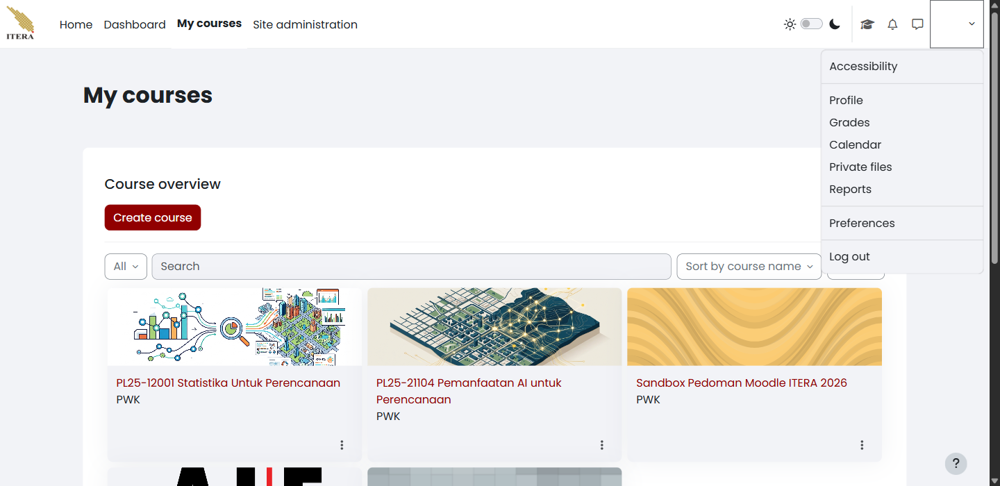

1 Masuk dan Mengenali Antarmuka
Bab ini menuntun Anda masuk ke New E-Learning ITERA, mengenali setiap laman yang tersedia di menu navigasi teratas, dan keluar dengan aman setelah selesai. Pembuatan dan pengelolaan mata kuliah dibahas tersendiri pada Bab 2.
1.1 Masuk ke New E-Learning ITERA
Anda memerlukan akun SSO ITERA yang aktif dan peramban (browser) yang mutakhir. Akun lokal Moodle hanya dipakai kalau pengelola layanan secara khusus memberikannya kepada Anda. Buka peramban, lalu ikuti langkah berikut:
- Ketik alamat
https://kuliah2.itera.ac.idpada bilah alamat, lalu tekan Enter. - Pilih Log in di sudut kanan atas beranda seperti terlihat pada Gambar 1.1.

kuliah2.itera.ac.id dengan tautan Log in di sudut kanan atas
- Pada halaman Welcome back, pilih Log in with SSO ITERA seperti terlihat pada Gambar 1.2. Gunakan formulir username dan kata sandi Moodle hanya jika pengelola layanan memberi Anda akun lokal.

- Pada halaman SSO Login, isi Email Pengguna, Kata Sandi, dan Hasil pemeriksaan aritmetika, lalu pilih Login. Gambar 1.3 memperlihatkan formulir sebelum data akun diisi.

Setelah proses masuk selesai, New E-Learning ITERA membuka halaman My courses, bukan Dashboard. Alamat pangkal https://kuliah2.itera.ac.id juga mengarah ke halaman yang sama selama sesi Anda masih aktif, sehingga mengetik alamat itu kembali tidak akan membawa Anda ke beranda publik.
Jika halaman SSO menolak data akun Anda, periksa kembali alamat surel dan hasil pemeriksaan aritmetika sebelum mencoba lagi; kata sandi SSO tidak dikelola oleh Moodle sehingga pemulihannya dilakukan melalui layanan SSO ITERA, bukan melalui halaman ini. Jika Anda masuk tetapi tidak melihat satu pun mata kuliah, lanjutkan ke Bab 2 — mata kuliah Anda mungkin memang belum dibuat.
1.2 Mengenali tampilan antarmuka
Menu navigasi teratas tetap sama di halaman mana pun Anda berada, seperti terlihat pada Gambar 1.4. Sisi kiri memuat empat tautan laman — Home, Dashboard, My courses, dan Site administration — sedangkan sisi kanan memuat kendali yang menyertai akun Anda: togel tema terang/gelap, tombol My learning, ikon notifikasi, ikon pesan, dan menu akun. Togel Edit mode muncul di ujung kanan pada halaman yang memang dapat disunting, yaitu Dashboard dan halaman mata kuliah.
Empat laman berikut dibahas satu per satu supaya Anda tahu apa yang dapat dan tidak dapat dikerjakan dari masing-masing laman.
1.2.1 My courses
My courses adalah halaman pertama yang Anda lihat setelah masuk, dan menjadi titik mulai hampir semua pekerjaan Anda di New E-Learning ITERA. Halaman ini memuat satu blok Course overview yang mendaftar seluruh mata kuliah tempat akun Anda terdaftar — sebagai pengajar maupun peserta (Gambar 1.5).

Di dalam blok tersebut tersedia:
| Kendali | Kegunaan |
|---|---|
| Create course | Membuat mata kuliah baru. Tombol ini hanya muncul bagi akun yang berperan Course creator (lihat Bab 2). |
| Penyaring All | Menyaring daftar menurut keadaan mata kuliah: All, In progress, Future, Past, Starred, dan Removed from view. |
| Search | Mencari mata kuliah berdasarkan namanya, berguna ketika daftar sudah panjang. |
| Sort by course name | Mengurutkan daftar menurut nama, waktu akses terakhir, atau tanggal mulai. |
| Card | Mengganti bentuk tampilan antara Card, List, dan Summary. |
Setiap kartu mata kuliah menampilkan nama mata kuliah, kategori tempat mata kuliah itu berada, dan menu titik tiga (⋮) untuk menandainya sebagai favorit (Star this course) atau menyembunyikannya dari daftar (Remove from view). Mata kuliah yang belum diterbitkan bagi mahasiswa ditandai lencana Hidden from students.
Daftar Mata Kuliah Dimuat Belakangan
Blok Course overview mengambil isinya melalui permintaan terpisah setelah halaman tampil. Kalau daftar terlihat kosong sesaat setelah halaman terbuka, tunggu beberapa detik atau muat ulang halaman sebelum menyimpulkan bahwa Anda tidak terdaftar di mata kuliah mana pun.
Jika sebuah mata kuliah tidak muncul di daftar, periksa lebih dahulu penyaring All dan pilihan Removed from view — kartu yang pernah disembunyikan tidak ikut tampil pada penyaring lain. Kalau mata kuliah tetap tidak ditemukan padahal Anda yakin sudah terdaftar, minta pengelola prodi memeriksa status enrolment akun Anda; jangan mencoba mendaftarkan diri lewat Site administration.
1.2.2 Dashboard
Dashboard merangkum kegiatan lintas mata kuliah dalam satu layar (Gambar 1.6). Halaman ini bersifat pribadi: susunannya hanya berlaku untuk akun Anda dan tidak memengaruhi tampilan mahasiswa.

Blok Timeline mendaftar kegiatan bertenggat yang memerlukan tindakan, dengan penyaring rentang waktu (Next 7 days), pengurutan (Sort by dates), dan kotak pencarian menurut jenis atau nama aktivitas. Blok Calendar menampilkan kalender bulanan, penyaring All courses untuk membatasi tampilan pada satu mata kuliah, serta tombol New event untuk menambahkan agenda. Panel Recently accessed items di sisi kanan mempercepat Anda kembali ke bahan yang terakhir dibuka.
Togel Edit mode pada halaman ini mengatur susunan blok Dashboard Anda sendiri — memindahkan, menambah, atau menghapus blok — bukan mengubah isi mata kuliah. Kalau Timeline menampilkan No activities require action padahal Anda tahu ada tugas berjalan, periksa rentang waktu pada penyaringnya; kegiatan yang tenggatnya lebih jauh dari rentang terpilih memang tidak ditampilkan.
1.2.3 Home
Home membuka beranda situs New E-Learning ITERA, yaitu halaman yang juga dilihat pengunjung yang belum masuk. Isinya ditetapkan pengelola layanan dan biasanya memuat pengumuman tingkat situs serta daftar kategori mata kuliah. Anda tidak mengelola apa pun dari sini; laman ini berguna ketika Anda perlu menelusuri kategori prodi atau memeriksa pengumuman resmi layanan.
1.2.4 Site administration
Site administration membuka pengaturan tingkat situs. Bagi dosen, isinya jauh lebih terbatas daripada bagi admin layanan — hanya sebagian tab yang terbuka, dan sebagian besar bagian di dalamnya menolak akses dengan pesan Section error!. Yang relevan bagi Anda umumnya adalah pengelolaan mata kuliah, yang jalurnya juga tersedia lebih langsung lewat My courses.
Batasan Akses Site Administration
Kalau Anda memerlukan kewenangan yang tidak Anda miliki — menambah metode enrolment yang tidak tersedia, mengubah pengaturan tingkat situs, atau membuka laporan yang terkunci — hubungi pengelola layanan atau pengelola prodi. Mencoba menembusnya lewat Site administration hanya akan menghasilkan pesan galat, dan sebagian pengaturan tingkat situs berdampak ke seluruh mata kuliah di ITERA, bukan hanya milik Anda.
1.2.5 Menu akun dan preferensi
Menu akun dibuka lewat foto profil di ujung kanan menu navigasi. Isinya memuat jalur pintas ke data pribadi Anda dan kendali untuk keluar (Gambar 1.7).

| Butir | Kegunaan |
|---|---|
| Accessibility | Menyetel bantuan aksesibilitas tampilan. |
| Profile | Membuka profil Anda, termasuk daftar mata kuliah dan ringkasan aktivitas. |
| Grades | Menampilkan nilai Anda sendiri sebagai peserta, bukan nilai mahasiswa yang Anda ampu. |
| Calendar | Membuka kalender penuh, lebih lengkap daripada blok kalender di Dashboard. |
| Private files | Ruang penyimpanan pribadi yang tidak terikat pada satu mata kuliah. |
| Reports | Laporan aktivitas akun Anda sendiri. |
| Preferences | Pengaturan akun: bahasa, notifikasi, penyuntingan profil, dan kata sandi (untuk akun lokal). |
| Log out | Mengakhiri sesi, dibahas pada Bagian 1.3. |
Perhatikan bahwa Grades dan Reports pada menu ini selalu mengacu pada akun Anda sendiri. Nilai dan laporan mahasiswa yang Anda ampu dibuka dari menu di dalam mata kuliah, bukan dari sini — lihat Bagian 2.3.
1.3 Keluar dari New E-Learning ITERA
Sesi yang ditinggalkan terbuka memberi orang lain akses penuh ke mata kuliah, nilai, dan data mahasiswa Anda. Selesaikan pekerjaan Anda, lalu ikuti langkah berikut:
- Buka menu akun di ujung kanan menu navigasi teratas.
- Pilih Log out.
- Pastikan halaman kembali ke beranda publik dan menu navigasi tidak lagi menampilkan My courses atau Site administration.
- Tutup jendela peramban kalau Anda memakai komputer bersama, misalnya komputer di ruang kelas atau laboratorium.
Sesi Berakhir Sendiri, Tetapi Jangan Mengandalkannya
New E-Learning ITERA memutus sesi yang lama tidak dipakai dan menampilkan peringatan sebelum sesi berakhir. Batas waktunya ditetapkan pengelola layanan dan tidak dapat Anda ubah, jadi jangan memperkirakan sendiri berapa lama sesi Anda akan bertahan. Dua akibatnya: jangan meninggalkan komputer bersama dalam keadaan masuk dengan harapan sesi akan tertutup sendiri, dan simpan pekerjaan panjang secara berkala — formulir pengaturan atau naskah pengumuman yang ditinggal terlalu lama dapat gagal tersimpan ketika sesi sudah berakhir.
Jika halaman mata kuliah masih dapat dibuka setelah Anda memilih Log out, muat ulang halaman satu kali. Jika isi mata kuliah tetap terlihat, tutup seluruh jendela peramban dan laporkan keadaan tersebut kepada pengelola layanan; jangan menyertakan kata sandi dalam laporan itu.